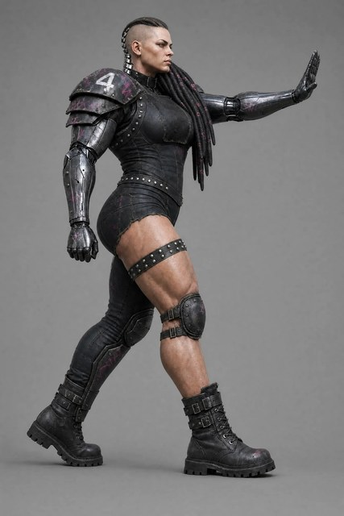
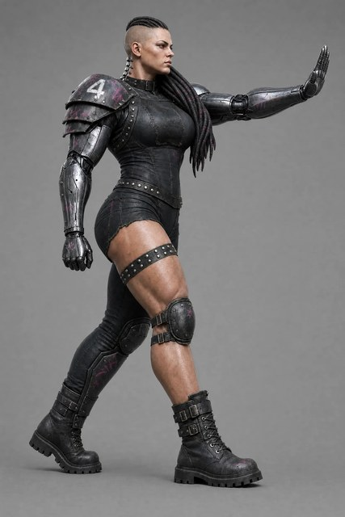
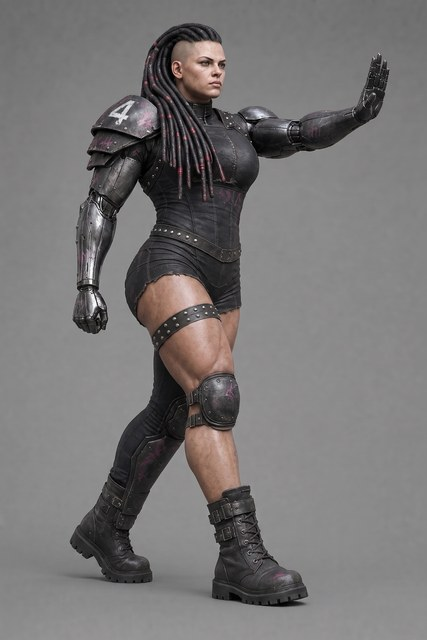
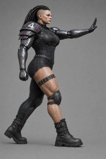

The source image(s) every generation in this round starts from. Click to zoom; open “inputs” for the prompt and reference images that produced each one.

gorgon-r6-B1-riverflow25

gorgon-r6-B2-riverflow25

gorgon-r6-C-flash31
Round type
turnaround sweep (+ base fix)
Status
Executed 2026-07-11 — see rounds.md (Round 8)
Owner
Claude (cloud) → Dimitri review
Date opened
2026-07-11
Inputs
gorgon-r6-B1-riverflow25, gorgon-r6-B2-riverflow25, gorgon-r6-C-flash31 — the R6 keeper bases
Produce clean four-view turnaround sheets for a Meshy run, fixing the two problems Round 7 surfaced: (1) flash31 keeps leaving the covered (her LEFT) leg's upper thigh bare — partly because the R6 gorgon-r6-C-flash31 base itself has a bare-thigh gap; and (2) panels were not in a rotational order (arbitrary camera jumps), a suspected source of per-panel inconsistency.
Technical plan — models, prompts, commands (pipeline detail)
What changed going in (spec / prompt / process deltas)
Strengthen leg-coverage language in the spec + every prompt (full-length leather legging, hip crease into boot, no bare skin, actively negated), AND repair the flash31 base before turning it around.
Strict 90° turntable panel order, with the reference view (pad-side profile) anchoring slot 2.
Model policy:flash31 is the reliable workhorse; pro2k (Gemini 3 Pro) runs alongside as an experiment. Riverflow is NOT used for turnarounds this round — too expensive (it still made the B1/B2 *bases* in R6; we only turn those around here).
Rotational panel order (adopted this round, now in spec.md)
Slot
Angle
View
Notes
1
0°
FRONT
faces camera
2
90°
HER RHS = PAD-SIDE near-profile
reference-camera view the base is in; strides viewer-right
3
180°
TRUE BACK
spine stack visible, face NOT drawn
4
270°
HER LHS = STIFF-ARM / non-pad profile
strides viewer-left
Same prompt drives both a 2×2 and a 1×4 template; the template file chooses the layout.
Experiment matrix
Four turnaround SOURCES, each generated with flash31 AND pro2k, and each in 2×2 AND 1×4 layout → 4 × 2 × 2 = 16 turnaround images, plus 2 base fixes.
#
Source base (input)
Hair variant
Turnaround prompt
Out stem (output)
1
gorgon-r6-B1-riverflow25-1
dreads over stiff-arm shoulder
prompts/r8-B-turnaround.txt
gorgon-r8-B1-turnaround
2
gorgon-r6-B2-riverflow25-1
dreads over stiff-arm shoulder
prompts/r8-B-turnaround.txt
gorgon-r8-B2-turnaround
3
gorgon-r8-f31fix-reprompt-flash31-1 (fix A)
dreads over PAD shoulder
prompts/r8-f31alt-turnaround.txt
gorgon-r8-f31reprompt-turnaround
4
gorgon-r8-f31fix-img2img-flash31-1 (fix B)
dreads over PAD shoulder
prompts/r8-f31alt-turnaround.txt
gorgon-r8-f31img2img-turnaround
Base fixes (flash31, off gorgon-r6-C-flash31-1): A = re-prompt / full redraw (prompts/r8-f31fix-reprompt.txt); B = surgical img2img (prompts/r8-f31fix-img2img.txt). Both must be audited (covered leg fully covered, everything else preserved) BEFORE their turnarounds are worth spending on.
The attached image shows a female cyberpunk gridiron-football blocker frozen mid-stride in a stiff-arm pose — a photorealistic full-body studio render on a plain gray backdrop, seen in near-profile from her armored-shoulder side as she strides toward the VIEWER'S RIGHT. Recreate THIS EXACT image — the SAME character, same face, same massive heavyweight build, same pose, same kit, same materials, same styling and lighting — with EXACTLY TWO CHANGES and nothing else changed:
CHANGE 1 — HAIR. In the attached image her thick cable-dreadlocks are swept back and hang down BEHIND her, down her back. Move them: gather the ENTIRE mass of dreadlocks and drape it forward over her FAR shoulder — the shoulder of the extended stiff-arm, the shoulder AWAY from the camera, the one WITHOUT the armored pad — so the whole bundle of thick sculpted cords hangs down the FRONT of that far shoulder toward her chest. After this change NO dreadlocks hang down her back: her upper back, the BACK OF HER NECK and her near pad-shoulder are completely clear of hair. On the newly exposed back of her neck, add the raised segmented SPINAL IMPLANT that the hair was hiding: a vertebral ridge of chunky bold chrome segments running from the back of her skull down the back of her neck and disappearing under the bodysuit's collar, clearly visible in profile against the background.
CHANGE 2 — CAMERA. Rotate the camera about 20 degrees further around toward her FRONT, keeping the same distance and height, so the view becomes slightly more of a three-quarter: more of the FRONT of her torso turns toward the camera, the OPEN PALM of her extended far hand becomes clearly visible to the camera, and her FAR trailing leg is clearly visible past her near leg instead of hiding behind it. She still strides toward the VIEWER'S RIGHT with the armored pad shoulder nearest the camera; the view stays side-biased, never a head-on front view.
Everything else stays IDENTICAL to the attached image: same pose — mid-stride, the NEAR bare leg leading with its combat boot planted flat on the ground, the FAR covered leg trailing with toes down and heel raised; the FAR arm fully extended forward at shoulder height with the open palm facing forward, fingers together, thumb visible; the NEAR chrome arm hanging at her side in a loose empty fist. Same kit — a single armored shoulder pad with the white number 4 on the NEAR shoulder only; the far shoulder stays the bare smooth chrome ball of the cyberarm joint with NO pad, NO strap, NO armor (the draped hair is hair, not armor); both arms full gunmetal military cyberarms; one CONTINUOUS intact legging on the covered trailing leg only, joining the suit at the hip with no bare-skin gap, no rips and no holes; exactly ONE wide studded leather garter, high on the bare near thigh; a hard armored knee pad on the covered leg and a strapped leather knee pad on the bare leg; bulky buckled combat boots on both feet. Same heavyweight V-tapered build, same cold level stare, both temples shaved with NO socket, stud or jewel on the visible temple or forehead. No weapons, no ball, no other people, no base or pedestal, and no text or logos anywhere except the number 4 on the shoulder pad and strictly illegible spray-stencil tags. Full figure head to toe, nothing cropped.
Reference images

gorgon-r4-side-riverflow25-1.png
gorgon-r6-B2-riverflow25
sourceful/riverflow-v2.5-pro via openrouter · resolution=2K · $0.36 · 2026-07-11T03:45:24
The attached image shows a female cyberpunk gridiron-football blocker frozen mid-stride in a stiff-arm pose — a photorealistic full-body studio render on a plain gray backdrop, seen in near-profile from her armored-shoulder side as she strides toward the VIEWER'S RIGHT. Recreate THIS EXACT image — the SAME character, same face, same massive heavyweight build, same pose, same kit, same materials, same styling and lighting — with EXACTLY TWO CHANGES and nothing else changed:
CHANGE 1 — HAIR. In the attached image her thick cable-dreadlocks are swept back and hang down BEHIND her, down her back. Move them: gather the ENTIRE mass of dreadlocks and drape it forward over her FAR shoulder — the shoulder of the extended stiff-arm, the shoulder AWAY from the camera, the one WITHOUT the armored pad — so the whole bundle of thick sculpted cords hangs down the FRONT of that far shoulder toward her chest. After this change NO dreadlocks hang down her back: her upper back, the BACK OF HER NECK and her near pad-shoulder are completely clear of hair. On the newly exposed back of her neck, add the raised segmented SPINAL IMPLANT that the hair was hiding: a vertebral ridge of chunky bold chrome segments running from the back of her skull down the back of her neck and disappearing under the bodysuit's collar, clearly visible in profile against the background.
CHANGE 2 — CAMERA. Rotate the camera about 20 degrees further around toward her FRONT, keeping the same distance and height, so the view becomes slightly more of a three-quarter: more of the FRONT of her torso turns toward the camera, the OPEN PALM of her extended far hand becomes clearly visible to the camera, and her FAR trailing leg is clearly visible past her near leg instead of hiding behind it. She still strides toward the VIEWER'S RIGHT with the armored pad shoulder nearest the camera; the view stays side-biased, never a head-on front view.
Everything else stays IDENTICAL to the attached image: same pose — mid-stride, the NEAR bare leg leading with its combat boot planted flat on the ground, the FAR covered leg trailing with toes down and heel raised; the FAR arm fully extended forward at shoulder height with the open palm facing forward, fingers together, thumb visible; the NEAR chrome arm hanging at her side in a loose empty fist. Same kit — a single armored shoulder pad with the white number 4 on the NEAR shoulder only; the far shoulder stays the bare smooth chrome ball of the cyberarm joint with NO pad, NO strap, NO armor (the draped hair is hair, not armor); both arms full gunmetal military cyberarms; one CONTINUOUS intact legging on the covered trailing leg only, joining the suit at the hip with no bare-skin gap, no rips and no holes; exactly ONE wide studded leather garter, high on the bare near thigh; a hard armored knee pad on the covered leg and a strapped leather knee pad on the bare leg; bulky buckled combat boots on both feet. Same heavyweight V-tapered build, same cold level stare, both temples shaved with NO socket, stud or jewel on the visible temple or forehead. No weapons, no ball, no other people, no base or pedestal, and no text or logos anywhere except the number 4 on the shoulder pad and strictly illegible spray-stencil tags. Full figure head to toe, nothing cropped.
The attached image shows a female cyberpunk gridiron-football blocker frozen mid-stride in a stiff-arm pose — a photorealistic full-body studio render on a plain gray backdrop, seen in near-profile from her armored-shoulder side as she strides toward the VIEWER'S RIGHT. Recreate THIS EXACT image — the SAME character, same face, same massive heavyweight build, same pose, same kit, same materials, same styling and lighting — with EXACTLY TWO CHANGES and nothing else changed:
CHANGE 1 — HAIR. In the attached image her thick cable-dreadlocks are swept back and hang down BEHIND her, down her back. Move them: gather the ENTIRE mass of dreadlocks and drape it forward over her FAR shoulder — the shoulder of the extended stiff-arm, the shoulder AWAY from the camera, the one WITHOUT the armored pad — so the whole bundle of thick sculpted cords hangs down the FRONT of that far shoulder toward her chest. After this change NO dreadlocks hang down her back: her upper back, the BACK OF HER NECK and her near pad-shoulder are completely clear of hair. On the newly exposed back of her neck, add the raised segmented SPINAL IMPLANT that the hair was hiding: a vertebral ridge of chunky bold chrome segments running from the back of her skull down the back of her neck and disappearing under the bodysuit's collar, clearly visible in profile against the background.
CHANGE 2 — CAMERA. Rotate the camera about 20 degrees further around toward her FRONT, keeping the same distance and height, so the view becomes slightly more of a three-quarter: more of the FRONT of her torso turns toward the camera, the OPEN PALM of her extended far hand becomes clearly visible to the camera, and her FAR trailing leg is clearly visible past her near leg instead of hiding behind it. She still strides toward the VIEWER'S RIGHT with the armored pad shoulder nearest the camera; the view stays side-biased, never a head-on front view.
Everything else stays IDENTICAL to the attached image: same pose — mid-stride, the NEAR bare leg leading with its combat boot planted flat on the ground, the FAR covered leg trailing with toes down and heel raised; the FAR arm fully extended forward at shoulder height with the open palm facing forward, fingers together, thumb visible; the NEAR chrome arm hanging at her side in a loose empty fist. Same kit — a single armored shoulder pad with the white number 4 on the NEAR shoulder only; the far shoulder stays the bare smooth chrome ball of the cyberarm joint with NO pad, NO strap, NO armor (the draped hair is hair, not armor); both arms full gunmetal military cyberarms; one CONTINUOUS intact legging on the covered trailing leg only, joining the suit at the hip with no bare-skin gap, no rips and no holes; exactly ONE wide studded leather garter, high on the bare near thigh; a hard armored knee pad on the covered leg and a strapped leather knee pad on the bare leg; bulky buckled combat boots on both feet. Same heavyweight V-tapered build, same cold level stare, both temples shaved with NO socket, stud or jewel on the visible temple or forehead. No weapons, no ball, no other people, no base or pedestal, and no text or logos anywhere except the number 4 on the shoulder pad and strictly illegible spray-stencil tags. Full figure head to toe, nothing cropped.